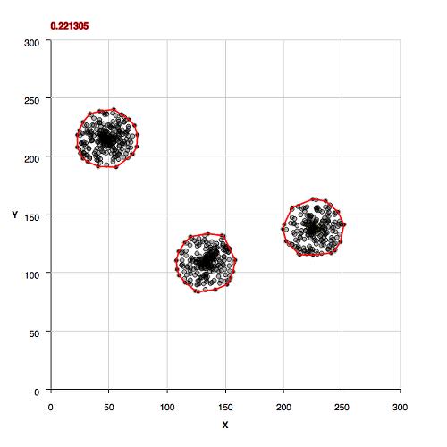 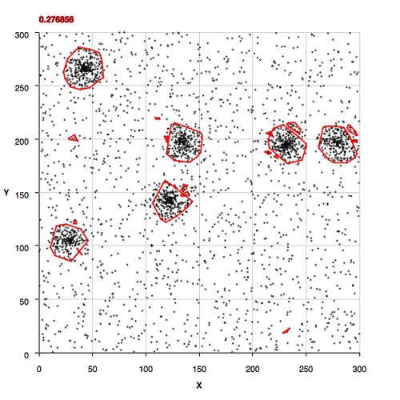 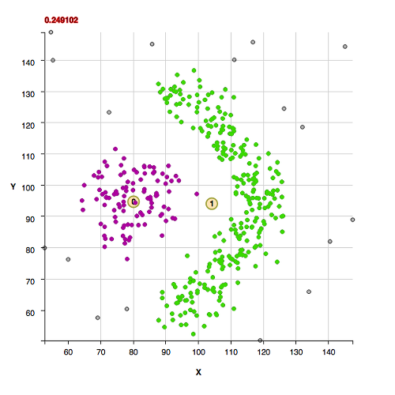
The code is a density based clustering algorithm. The algorithm does not require prior knowledge of the number of clusters, nor does it require a separation distance for association of points, and the algorithm finds non-convex cluster shapes in a statistically based manner that is reproducable. The algorithm learns the association separation distance of points by the statistics of the data itself and applies that in a critical threshold for membership of points within a cluster.
The algorithm, in an unsupervised manner, constructs a distance transform for every non-point relative to the nearest point in the dataset. Histograms are formed from the inverse square root of the distance transform and the first peaks in the histogram are fit to derive the critical density. The critical separation between 2 points is then calculated from the critical density and a factor above background. Any points closer to one another than the critical separation are within clustering distance of one another.
The results are available as data and visualized through generated html plots. (Improvements to packaging and documentation are in progress.)
More about the density distribution:
Usage as an API:
To use the code with default settings:
DTClusterFinder clusterFinder = new DTClusterFinder(points,
imageWidth, imageHeight);
clusterFinder.setToDebug();
clusterFinder.calculateCriticalDensity();
// alternatively, if the density is known, set instead of calculate:
//clusterFinder.setCriticalDensity(dens);
clusterFinder.findClusters();
int nGroups = clusterFinder.getNumberOfClusters();
List> groupList = new ArrayList>();
for (int k = 0; k < nGroups; ++k) {
Set set = clusterFinder.getCluster(k);
groupList.add(set);
}
The scatter plots and histograms below use d3 js
The citation for use of this code in a publication is:
http://code.google.com/p/two-point-correlation/, Nichole King, "Unsupervised Clustering Based Upon Voids in Two-Point Correlation". March 15, 2013.
The previous version of this code is presented in the previous web page.
Note that I wrote the core algorithm in this work (without the automated density calculation) several years ago and the results were part of a publication. What got published was the results from this algorithm used as input for another algorithm that requires knowledge of association radius in order to work. The algorithm that used my algorithm's input required a parameter that was not derivable from it's use alone. Similarly, "k-means clustering" requires knowledge of the number of clusters before use. "k-means++" is an algorithm that suggests one can adjust the number of clusters k, but a statistical method of doing so would still require a density based analysis, and hence, it would need to do the same work as the algorithm here, but presumably less efficiently. Delaunay Triangulation is useful if there are no background points within a dataset, that is all points will be members of a group, and if groups do not have non-convex shapes. KDTrees are useful as a nearest neighbor algorithm, but its use in determining clusters would still require as input, an association radius. Fun stuff, but the core of the algorithm here is was what I needed to create awhile back for work applied to galaxy surveys. The addition published here is automation of the background determination and large improvements of the overall algorithm.
Non-Convex Morphology Clusters
The cluster "shape" datasets collected at http://cs.joensuu.fi/sipu/datasets/ are fit here with explanations of code settings used and comments about the data.
These clusters were found with the default algorithm settings. No additional settings were needed for the background:
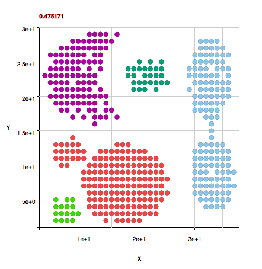 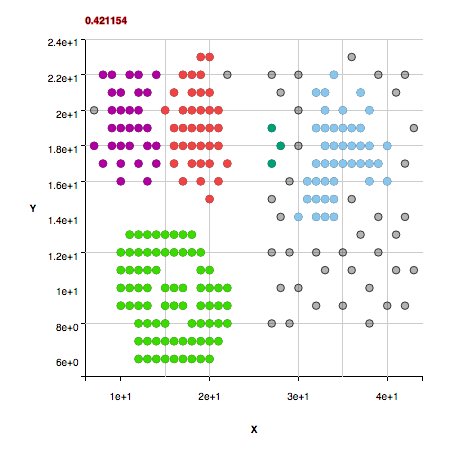 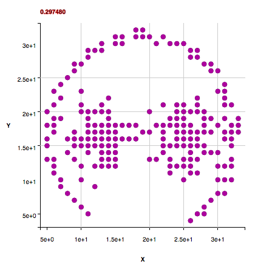 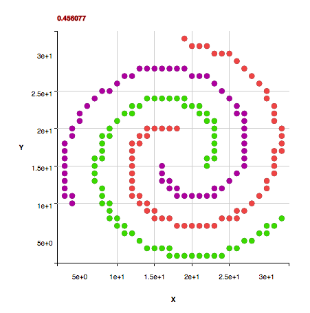 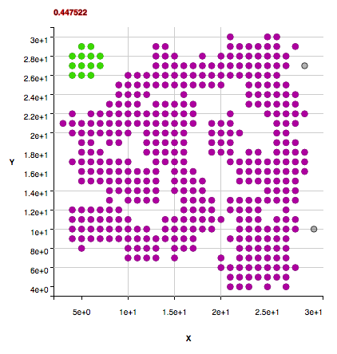 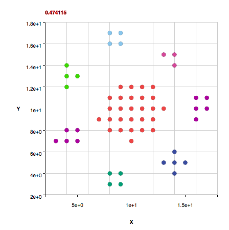 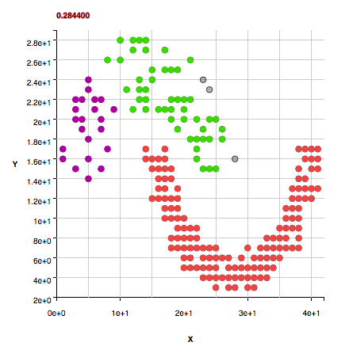 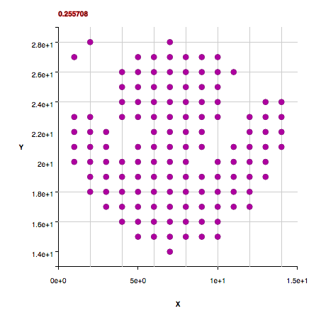Performance Metrics
The runtime complexity is roughly O(Npixels X log2(Npixels)) where Npixels is the width times height of the image. The space complexity is roughly platform word size X width X height, so for a width of 5000 and height of 5000, the code must be run with java arguments to increase the stack size or the data must be reduced in size... like knapsack, the code is using dynamic programmining using arrays that are as long as needed for capacity.